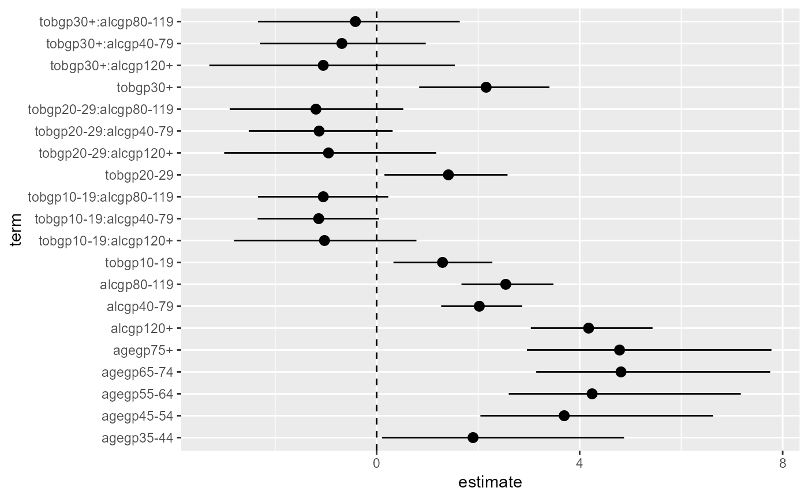
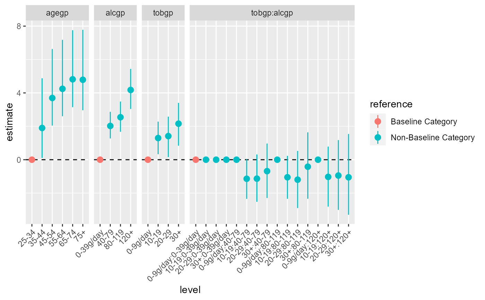

Expand broom::tidy() Outputs for Categorical Parameter Estimates
Source:R/tidy_categorical.R
tidy_categorical.RdCreate additional columns in a tidy model output (such as broom::tidy.lm()) to allow for easier control when plotting categorical parameter estimates.
Usage
tidy_categorical(
d = NULL,
m = NULL,
include_reference = TRUE,
reference_label = "Baseline Category",
non_reference_label = paste0("Non-", reference_label),
exponentiate = FALSE,
n_level = FALSE
)Arguments
- d
A data frame tibble::tibble() output from broom::tidy.lm(); with one row for each term in the regression, including column
term- m
A model object, created using a function such as lm()
- include_reference
Logical indicating to include additional rows in output for reference categories, obtained from dummy.coef(). Defaults to
TRUE- reference_label
Character string. When used will create an additional column in output with labels to indicate if terms correspond to reference categories.
- non_reference_label
Character string. When
reference_labelis used will be in output to indicate if terms not corresponding to reference categories.- exponentiate
Logical indicating whether or not the results in broom::tidy.lm() are exponentiated. Defaults to
FALSE.- n_level
Logical indicating whether or not to include a column
n_levelfor the number of observations per category. Defaults toFALSE.
Value
Expanded tibble::tibble() from the version passed to d including additional columns:
- variable
The name of the variable that the regression term belongs to.
- level
The level of the categorical variable that the regression term belongs to. Will be an the term name for numeric variables.
- effect
The type of term (
mainorinteraction)- reference
The type of term (
referenceornon-reference) with label passed fromreference_label. Ifreference_labelis setNULLwill not be created.- n_level
The the number of observations per category. If
n_levelis setNULL(default) will not be created.
In addition, extra rows will be added, if include_reference is set to FALSE for the reference categories, obtained from dummy.coef()
Examples
# strip ordering in factors (currently ordered factor not supported)
library(dplyr)
#>
#> Attaching package: 'dplyr'
#> The following objects are masked from 'package:stats':
#>
#> filter, lag
#> The following objects are masked from 'package:base':
#>
#> intersect, setdiff, setequal, union
library(broom)
m0 <- esoph %>%
mutate_if(is.factor, ~factor(., ordered = FALSE)) %>%
glm(cbind(ncases, ncontrols) ~ agegp + tobgp * alcgp, data = .,
family = binomial())
# tidy
tidy(m0)
#> # A tibble: 21 × 5
#> term estimate std.error statistic p.value
#> <chr> <dbl> <dbl> <dbl> <dbl>
#> 1 (Intercept) -7.27 1.11 -6.57 5.15e-11
#> 2 agegp35-44 1.90 1.11 1.72 8.62e- 2
#> 3 agegp45-54 3.70 1.06 3.48 5.06e- 4
#> 4 agegp55-64 4.25 1.06 4.00 6.25e- 5
#> 5 agegp65-74 4.81 1.07 4.50 6.83e- 6
#> 6 agegp75+ 4.79 1.12 4.26 2.00e- 5
#> 7 tobgp10-19 1.30 0.491 2.65 8.16e- 3
#> 8 tobgp20-29 1.41 0.606 2.33 1.98e- 2
#> 9 tobgp30+ 2.16 0.644 3.35 8.06e- 4
#> 10 alcgp40-79 2.02 0.403 5.02 5.18e- 7
#> # … with 11 more rows
# add further columns to tidy output to help manage categorical variables
m0 %>%
tidy() %>%
tidy_categorical(m = m0, include_reference = FALSE)
#> # A tibble: 21 × 8
#> term estimate std.error statistic p.value variable level effect
#> <chr> <dbl> <dbl> <dbl> <dbl> <chr> <fct> <chr>
#> 1 (Intercept) -7.27 1.11 -6.57 5.15e-11 (Intercept) (Interc… main
#> 2 agegp35-44 1.90 1.11 1.72 8.62e- 2 agegp 35-44 main
#> 3 agegp45-54 3.70 1.06 3.48 5.06e- 4 agegp 45-54 main
#> 4 agegp55-64 4.25 1.06 4.00 6.25e- 5 agegp 55-64 main
#> 5 agegp65-74 4.81 1.07 4.50 6.83e- 6 agegp 65-74 main
#> 6 agegp75+ 4.79 1.12 4.26 2.00e- 5 agegp 75+ main
#> 7 tobgp10-19 1.30 0.491 2.65 8.16e- 3 tobgp 10-19 main
#> 8 tobgp20-29 1.41 0.606 2.33 1.98e- 2 tobgp 20-29 main
#> 9 tobgp30+ 2.16 0.644 3.35 8.06e- 4 tobgp 30+ main
#> 10 alcgp40-79 2.02 0.403 5.02 5.18e- 7 alcgp 40-79 main
#> # … with 11 more rows
# include reference categories and column to indicate the additional terms
m0 %>%
tidy() %>%
tidy_categorical(m = m0)
#> # A tibble: 31 × 9
#> term estimate std.error statis…¹ p.value varia…² level effect refer…³
#> <chr> <dbl> <dbl> <dbl> <dbl> <chr> <fct> <chr> <chr>
#> 1 (Intercept) -7.27 1.11 -6.57 5.15e-11 (Inter… (Int… main Non-Ba…
#> 2 NA 0 0 0 0 agegp 25-34 main Baseli…
#> 3 agegp35-44 1.90 1.11 1.72 8.62e- 2 agegp 35-44 main Non-Ba…
#> 4 agegp45-54 3.70 1.06 3.48 5.06e- 4 agegp 45-54 main Non-Ba…
#> 5 agegp55-64 4.25 1.06 4.00 6.25e- 5 agegp 55-64 main Non-Ba…
#> 6 agegp65-74 4.81 1.07 4.50 6.83e- 6 agegp 65-74 main Non-Ba…
#> 7 agegp75+ 4.79 1.12 4.26 2.00e- 5 agegp 75+ main Non-Ba…
#> 8 NA 0 0 0 0 tobgp 0-9g… main Baseli…
#> 9 tobgp10-19 1.30 0.491 2.65 8.16e- 3 tobgp 10-19 main Non-Ba…
#> 10 tobgp20-29 1.41 0.606 2.33 1.98e- 2 tobgp 20-29 main Non-Ba…
#> # … with 21 more rows, and abbreviated variable names ¹statistic, ²variable,
#> # ³reference
# coefficient plots
d0 <- m0 %>%
tidy(conf.int = TRUE) %>%
tidy_categorical(m = m0) %>%
# drop the intercept term
slice(-1)
d0
#> # A tibble: 30 × 11
#> term estim…¹ std.e…² stati…³ p.value conf.…⁴ conf.…⁵ varia…⁶ level effect
#> <chr> <dbl> <dbl> <dbl> <dbl> <dbl> <dbl> <chr> <fct> <chr>
#> 1 NA 0 0 0 0 0 0 agegp 25-34 main
#> 2 agegp35… 1.90 1.11 1.72 8.62e-2 0.105 4.87 agegp 35-44 main
#> 3 agegp45… 3.70 1.06 3.48 5.06e-4 2.04 6.63 agegp 45-54 main
#> 4 agegp55… 4.25 1.06 4.00 6.25e-5 2.60 7.17 agegp 55-64 main
#> 5 agegp65… 4.81 1.07 4.50 6.83e-6 3.14 7.75 agegp 65-74 main
#> 6 agegp75+ 4.79 1.12 4.26 2.00e-5 2.96 7.78 agegp 75+ main
#> 7 NA 0 0 0 0 0 0 tobgp 0-9g… main
#> 8 tobgp10… 1.30 0.491 2.65 8.16e-3 0.331 2.28 tobgp 10-19 main
#> 9 tobgp20… 1.41 0.606 2.33 1.98e-2 0.154 2.58 tobgp 20-29 main
#> 10 tobgp30+ 2.16 0.644 3.35 8.06e-4 0.837 3.40 tobgp 30+ main
#> # … with 20 more rows, 1 more variable: reference <chr>, and abbreviated
#> # variable names ¹estimate, ²std.error, ³statistic, ⁴conf.low, ⁵conf.high,
#> # ⁶variable
# typical coefficient plot
library(ggplot2)
library(tidyr)
ggplot(data = d0 %>% drop_na(),
mapping = aes(x = term, y = estimate,
ymin = conf.low, ymax = conf.high)) +
coord_flip() +
geom_hline(yintercept = 0, linetype = "dashed") +
geom_pointrange()

# enhanced coefficient plot using additional columns from tidy_categorical and ggforce::facet_row()
library(ggforce)
ggplot(data = d0,
mapping = aes(x = level, colour = reference,
y = estimate, ymin = conf.low, ymax = conf.high)) +
facet_row(facets = vars(variable), scales = "free_x", space = "free") +
geom_hline(yintercept = 0, linetype = "dashed") +
geom_pointrange() +
theme(axis.text.x = element_text(angle = 45, hjust = 1))
